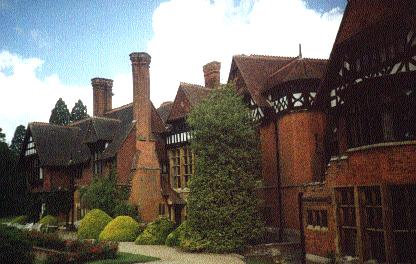
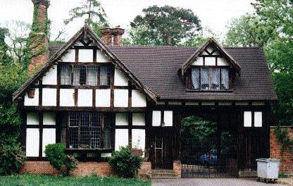
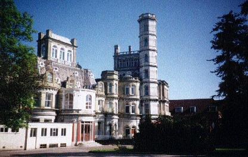
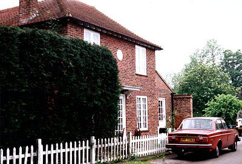
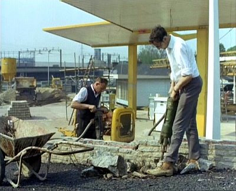
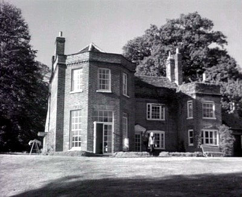
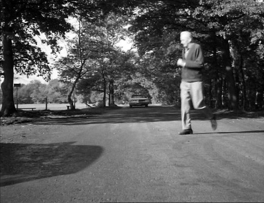

P1: Grim's Dyke Hotel, Old Redding, Harrow Weald

THE
SAINT: The Russian
Prisoner (Peter Moxey: February 1966)
Simon Templar (Roger Moore) attempts to rescue
Karel Jorvitch from the
Russian counsel in Switzerland whilst Irma Jorovitch (Penelope
Horner)
causes a diversion. KGB agents then turn up to collect the girl.
THE
SAINT: The Fiction
Makers (Roy Baker: May 1966)
Men with guard dogs patrol the grounds of SWORD HQ, with its front as
the Northfield Clinic for Nervous Disorders. Simon (Roger
Moore) walks
in the grounds with Galaxy (Justine Lord), watched
by Monk (Tom Clegg).
Frug (Philip Locke) is alerted to a light in
Templar's room by a guard.
Amos Klein (Sylvia Syms) and Simon escape from the
house and crash out
of the grounds in a car. Warlock (Kenneth J. Warren)
watches his men
practise moving through the infra-red beams. Simon tries to alert the
dustmen to his plight, and later races back to the house to rescue Amos.
THE
CHAMPIONS: The Mission
(Robert Asher: May 1967)
A van arrives at the Winthrop House Mission which is later visited by
Richard (William Gaunt). Craig (Stuart
Damon) and Sharron (Alexandra
Bastedo) overpower their guards by the car. Craig and Richard
steal the
van to chase the escaping Peterson.
THE
CHAMPIONS: The
Experiment (Cyril Frankel: June 1967)
Cranmore (Allan Cuthbertson) arrives at Glind's
training centre in the
taxi. Richard (William Gaunt) and Craig (Stuart
Damon) jump over the
walls of the house and watch Sharron training inside. Richard and Craig
overpower two guards that night.
THE
CHAMPIONS: The Body
Snatchers (Paul Dickson: Autumn 1967)
Craig (Stuart Damon) and Sharron (Alexandra
Bastedo) arrive at the
Mellion Research Centre and overpower guards on the entrance road.
Craig and Richard pursue the escaping Squires.
JOURNEY
TO THE UNKNOWN: The
Killing Bottle (John Gibson: 1968)
Rello Verdew (Roddy McDowall) lures Jimmy Kintoul (Barry
Evans) to the
home of his brother Randolph Verdew (William Marlowe).
With the help of
his girlfriend Vean Verdew (Ingrid Brett) he
intends to manipulate the
eccentric Randolph into killing Jimmy (the majority of this
episode is
filmed on location within the house).
THE
CHAMPIONS: The Final
Countdown (John Gilling: Early 1968)
Kruger (Derek Newark) and his men load the drunken
pilot into a white
Jaguar. Later, Craig stops and asks directions in Germany on the entry
road.
RANDALL
AND HOPKIRK [DECEASED]: But
What a Sweet Little Room (Roy Ward Baker: June
1968)
Arthur de Crecy drives Anne Fenwick to his 'cottage in the country' in
his Peugeot (back projection of driveway).
(Confirmed by Vince Cox, November 20th 2012)
THE
AVENGERS: Game
(Robert Fuest: June 1968)
Brigadier Wishforth-Browne is lured to Monty Bristow's house for
dinner. Having completed the jigsaw, Steed visits Bristow's in his
Rolls.
RANDALL
AND HOPKIRK [DECEASED]: You
Can Always Find A Fall Guy (Ray Austin: August
1968)
Jeff (Mike Pratt) and Marty (Kenneth Cope)
meet a nun (Juliet Harmer)
at what they think is a convent, but on the entrance road are soon
stopped by Edwards (Garfield Morgan). Jeff flees
from the Winchester
Electronics Research Corporation whilst Marty holds the dogs at bay,
but later returns and talks to Edwards about his cars.
DEPARTMENT
S: The Bones of Byrom
Blain (Paul Dickson: 1968)
The house at Marling Dale.
THE
ADVENTURER: The Case
of the Poisoned Pawn (Cyril Frankel: 1972)
Bradley arrives to face Hamilton for an important game of chess.
Television:
DOCTOR WHO: The Evil of the Daleks (1967)
THRILLER: K is for Killing (1974)
Films:
THE CURSE OF THE CRIMSON ALTAR
(1968)
THE BLOOD BEAST TERROR
(1968)
FUTTOCKS END (1970)
ENDLESS NIGHT (1971)
P2: Bentley Priory Gate House, Common Road, Harrow Weald

H.
G. WELLS' INVISIBLE MAN: Behind
the Mask (Pennington Richards: 1958)
Peter Brady arrives at the gate house to the home of Raphael
Constantine. Brady returns at night, sneaking past the gate keeper (day
for night); later he escapes from the house and makes off in
his car.
P3: Caldecote Towers (Rosary Prior High School), Elstree Road, Bushey

ONE
STEP BEYOND: The Villa
(John Newland: early 1961)
During a psychological experiment Mary Low has a vision of a large
house with a distinctive lift, the following morning she finds out that
the house, Villa Orlando, actually exists and she feels compelled to
visit it.
THE
SAINT: The Contract
(Roger Moore: October 1964)
Simon and Eileen Ballinger go to visit Chuck Powers at Craven Wood
Military Hospital to talk about his last flight.
THE
AVENGERS: The Master
Minds (Peter Graham Scott: December 1964)
Steed (Patrick Macnee) arrives at the Dorrington
Dean School for Young
Ladies where he meets Holly Trent (Patricia Haines)
and Leeming
(Bernard Archard). Later, the conditioned Mrs Peel (Diana
Rigg)
indulges in some archery with Steed. (There is extensive use
of the
interior of the school in this episode.)
(Spotted by Michael Richardson, 1989)
THE
BARON: Diplomatic
Immunity (Leslie Norman: August 1965)
The Baron sneaks up to Comrade Sforza's house.
THE
BARON: And Suddenly
You're Dead (Cyril Frankel: January 1966)
Franklin escapes from Sorensen Laboratories and steals Holme's
limousine; he is followed by Frederick who mounts a motorcycle.
THE
BARON: The Maze
(Jeremy Summers: June 1966)
The Baron and Cordelia approach Crestview House, and after talking to
the occupiers leave. Mannering runs towards the house to stop the
assassins shooting the General.
THE
SAINT: The Ex-King of
Diamonds (Alvin Rakoff: Summer 1968)
Simon Templar (Roger Moore) arrives at the Hotel
Magnificent followed
soon after by Rod Huston (Stuart Damon) and his
Chauffeur (Ray
Chiarelle). They meet Janine Flambeau (Isla Blair)
who refuses a dinner
invitation from the two men before driving off in her Citroen 2CV.
THE
AVENGERS: They Keep
Killing Steed (Robert Fuest: August 1968)
Numerous fake Steeds arrive at the conference. Baron Von Curt (Ian
Ogilvy) brings Tara (Linda Thorson) to
his home which is to be used for
the peace conference. Steed (Patrick Macnee)
arrives by taxi and has to
deal with a double in a car. Chasing another double into the grounds he
throws the bomb away and is pursued by guards. Steed steals a car and
leaves, pursued by Tara and the Count.
INSPECTOR
MORSE: Who Killed
Harry Field? (Colin Gregg: 1990)
Helen Field (Geraldine James) takes Harry Field
Snr. (Freddie Jones)
home. Later Sgt. Lewis (Kevin Whately) pays a visit.
Films:
A WOMAN OF MYSTERY (1958)
SO EVIL, SO YOUNG (1961)
SUBTERFUGE(1968)
THE ABOMINABLE DR PHEBES
(1971)
HIGH ROAD TO CHINA
(1983)
P4: Melbury Cottage, Caldecote Lane, Bushey

THE
AVENGERS: Dead Man's
Treasure (Robert Day: June 1967)
Carl and Alex drive their car past the house just after leaving
Mithering.
P5: Wood Lane, Little Common, Stanmore
THE
SAINT: The House on
Dragon's Rock (Roger Moore: February 1966)
The Saint enters Llanfairtraws Sychnant in his Volvo.
THE
AVENGERS: The
Forget-Me-Knot (James Hill: December 1967)
Steed persuades Burton to drive him to the factory where Mrs Peel is
being held and they pass a pond on the way there.
THE
SAINT: Time to Die
(Roy Baker: 1968)
Simon instructs the chauffeur to take the "cut-off road to Fathersham"
THE
SAINT: The Ex-King of
Diamonds (Alvin Rakoff: Summer 1968)
Janine Flambeau and Professor Flambeau drive from the Casino to the
card factory in a Citroen 2CV (Wood lane looking towards
Stanmore Hill).
(Spotted by Geoff Dodd, December 2006)
Film:
THE ABOMINABLE DR PHEBES
(1971)
Television:
THRILLER: Come Out, Come Out Wherever You Are
(1974)
P6: Capel Road/Villiers Road, Oxhey
THE
AVENGERS: Death's Door
(Sidney Hayers: May 1967)
Steed and Mrs Peel follow Melford's route in his Rolls in order to
check his premonitions. They stop at a road junction where they hear
"machine gun fire".
(Richard McHale: January 2002)
P7: Rossway Farm Little Bushey Lane
THE
ADVENTURER: Skeleton
in the Cupboard (Cyril Frankel: 1972)
Gene Bradley (Gene Barry) goes to talk to the
former stunt man, Marks,
(Roy Kinnear) at his car wrecking yard.
P8: Bushey Manor School on London Road/Falconer Road
GIDEON’S
WAY: The Tin God
(John Gilling: June/July 1964)
Constable Lashbrook (Vincent Harding) escorts Liz (Shelley
Crowhurst)
and Syd Benson (Michael Cashman) to School. Charley
Muliver (Arthur
Lovegrove) is already waiting in a grey Morris panel van in a
wood yard
beside the school. Syd is driven away by his Uncle Charley and the
policeman is left to explain all to Det. Chief Insp. Keen (Alexander
Davion) when he arrives in his police car.
(Confirmed by Geoff Dodd, December 2006)
P9: Cross Road, Bushey
GIDEON’S
WAY: The Tin God
(John Gilling: June/July 1964)
Ruby Benson (Jennifer Wilson) arrives home at
Musket Street after a
hard day’s work. After Commander Gideon’s visit police guard the house,
but they allow Uncle Charley (Arthur Lovegrove)
access. The following
day Constable Lashbrook (Vincent Harding) arrives
to escort Liz
(Shelley Crowhurst) and Syd Benson (Michael
Cashman) to School.
(Identified by Alan Field, August 2007)
P10: Brookshill Drive, Harrow Weald
GIDEON’S
WAY: The Big Fix
(James Hill: September 1964)
Posing as a friend of Janet Middleton (Penelope Horner),
Detective
Inspector David Keen (Alexander Davion) is shown
around the stables
(Brookshill Farm / Dairy Cottage / Farm Cottage / Bridle
Cottage). He
is introduced to Jo Short (Michael Ripper). Dandy
Johnson (Brian
Phelan) watches the stable and is waiting when Hilarion is
delivered.
(Identified by Alan Field, June 2008)
P11: George V Avenue, Pinner Park, Harrow
GIDEON’S
WAY: The Tin God
(John Gilling: June/July 1964)
On their way into London John ‘Benny’ Benson and Freddy Tisdale spot a
Police road block.
(Identified by Geoff Dodd, November, 2009)
P12: High Street, Bushey
GIDEON’S
WAY: To Catch A Tiger
(Les Norman, April 1965)
Nurse Smith is rushed to hospital in an ambulance after being knocked
down (Bushey High Street/Park Road).
(Identified by Arthur Broadley, February 2010)
P13: Pinner Road/Aldenham Road, Watford

THE
AVENGERS: Death's Door
(Sidney Hayers: May 1967)
Steed and Mrs Peel follow Melford's route in his Rolls in order to
check his premonitions. The "machine gun fire" is explained by the
pneumatic drill being used by workmen constructing a service station.
P14: The Kiln, Old Redding, Stanmore

GIDEON’S
WAY: The Big Fix
(James Hill: September 1964)
Posing as a friend of Janet Middleton (Penelope Horner),
Detective
Inspector David Keen (Alexander Davion) arrives at
the Middleton
residence.
(Identified by Geoff Dodd, November 2014)
P15: Warren Lane, Stanmore

THE SAINT: The Sporting Chance (Jeremy Summers: 1963)